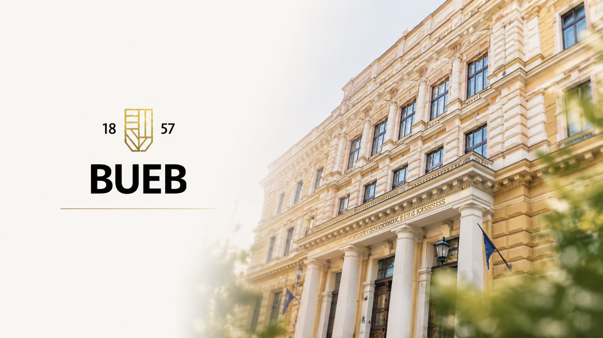
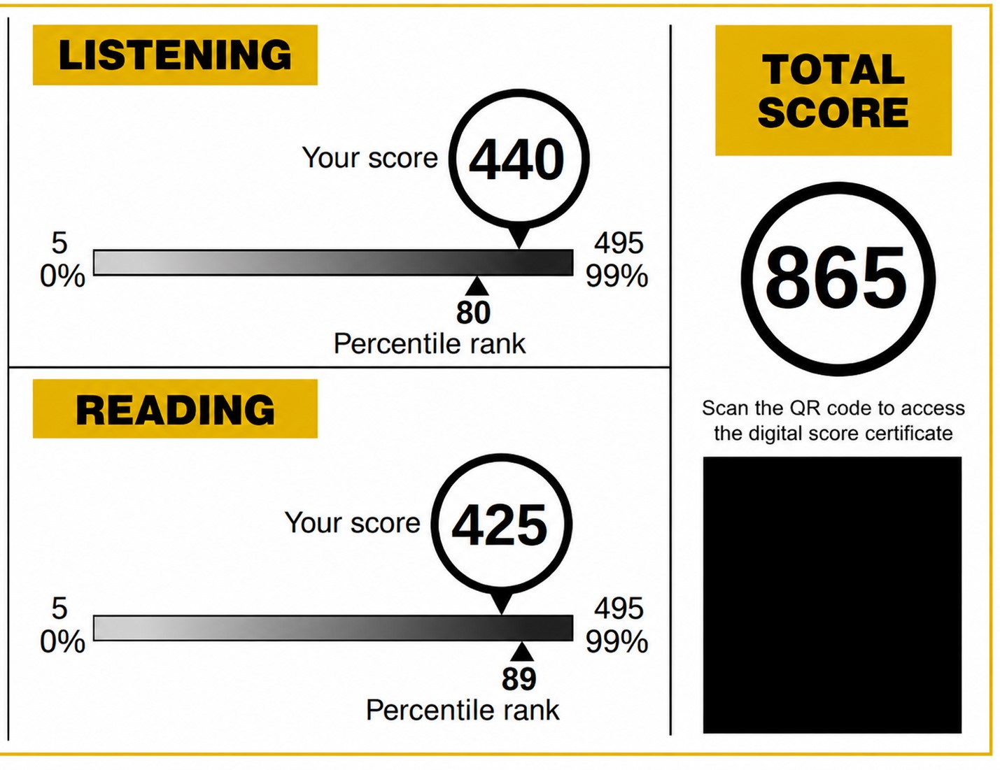
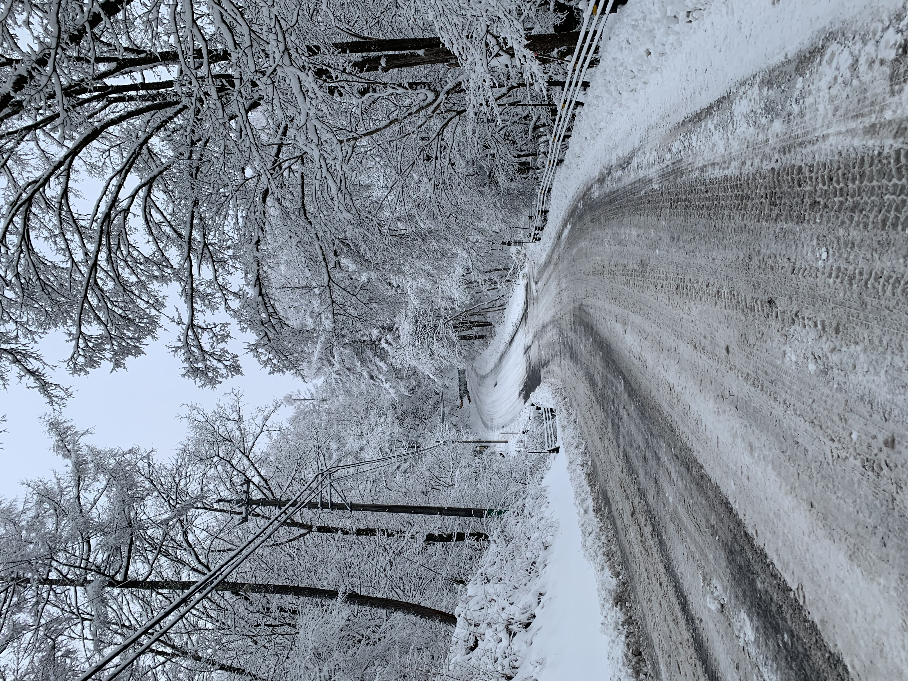
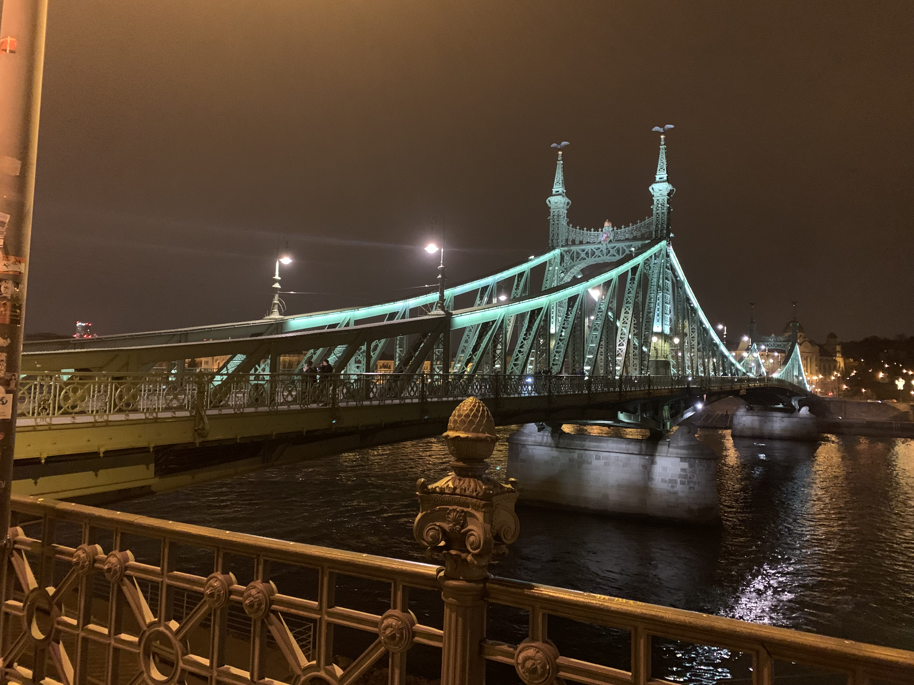
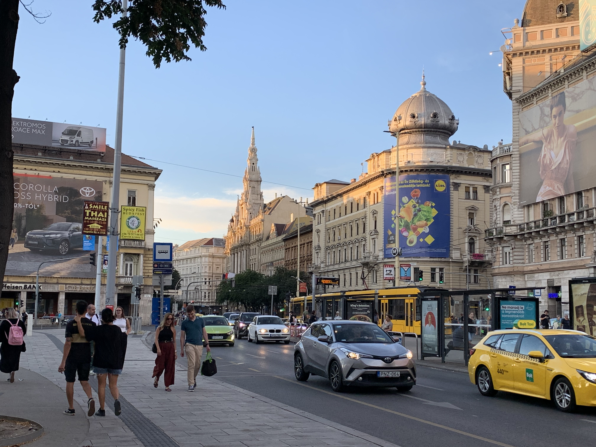

なぜ34歳で仕事を辞め、ハンガリーの大学院へ進学したのか
こんにちは。ハンガリー留学ラボのカネコです。
今回は、私が34歳で仕事を辞め、ハンガリーの大学院でTourism Management（観光マネジメント）を学ぶことにした理由について書いてみたいと思います。
「なぜ今さら大学院なの？」
「なぜ観光学なの？」
そう聞かれることがよくあります。
振り返ってみると、一つの出来事で決めたわけではありません。製薬会社で働いた経験、ホテルで働いた経験、自分自身の家庭環境、そしてAIの急速な発展。それらが少しずつつながり、今の選択にたどり着きました。
AI時代、自分は何で価値を提供できるのか
私は約8年間、外資系製薬会社で働き、そのうち短い期間ですが、MR（医薬情報担当者）として病院を担当しました。
MRは、医師や研究者へ医薬品に関する情報を提供し、治療に関する情報収集を行う専門職です。
仕事を続ける中で、不思議なことがありました。
私は、なぜか部長クラスや院長クラスの先生方と親しくなることが多かったのです。ほかのMRではなく私を指名してくださったり、診療とは関係のない雑談や愚痴を聞かせてもらったりすることも珍しくありませんでした。
売上について上司から厳しく言われたときには、先生方へ電話やショートメールで相談できるほどの関係を築けていました。
さらに、私が体調を崩して入院した際には、わざわざ病院までお見舞いに来てくださった先生や、手紙やメールを送ってくださった先生もいました。
これまで何人もの上司と一緒に病院を回りましたが、例外なく、同じようなことを言われました。
その言葉は、今でもよく覚えています。
しかし年齢を重ねるにつれ、「かわいがられる」とは一体何なのだろう、と考えるようになりました。
正直、薬の知識だけで勝負すれば、自分より優秀なMRはたくさんいました。薬学部出身で、専門知識も豊富な方は数え切れないほどいます。それでも先生方と話していると、不思議と会話が弾みました。
- どうしてこの人とは、こんなに話が合うのだろう。
- 人は何をきっかけに、相手を信頼するのだろう。
- 人にかわいがられる人と、そうではない人の違いは何なのだろう。
知識そのものよりも、人との信頼関係を築くことの方が、自分の強みなのではないか。そして、その力はどのように生まれるのか。私は、それをもっと深く理解したいと思うようになりました。
そんなことを考えていた頃、ChatGPTをはじめとする生成AIが急速に普及し始めました。
もちろん、医師や研究者、MRという仕事がなくなるとは思っていません。しかし、論文を調べたり、情報を整理したり、資料を作成したりする仕事の多くは、これまで以上にAIが担う時代になると感じました。
今後のキャリアを考えたとき、私はある不安を感じるようになりました。
その答えを探していく中で、私がたどり着いたのがホスピタリティという分野でした。
私にとってホスピタリティとは、単に丁寧な接客をすることではありません。相手に「この人に会えてよかった」「またこの人に相談したい」と思ってもらえるような関係を築くことです。
製品ではなく、自分自身を選んでもらう力。そして本音を言えば、「この能力を極めることができれば、これからの時代、一生食っていくのに困らないのではないか」という戦略的な考えもありました。
私は、その本質をもっと学びたいと思いました。


軽井沢でコンシェルジュとして一から学び直した
完全にキャリアを変える挑戦でした。
未経験の仕事へ移るため、当然、給料は大きく下がりました。
それでも給与よりも、人に最高の体験を提供する仕事とは何なのかを学びたいという思いの方が強かったのです。
そこで私は、軽井沢のホテルで約1年半働くことを選びました。いわば、ゼロからの丁稚奉公です。

ホテルでは、立ち居振る舞い、言葉遣い、身だしなみなど、ホスピタリティの基本を一から学び直しました。
製薬会社では、主に医師や研究者と接していました。しかしホテルでは、お客様一人ひとりのバックグラウンドがまったく異なります。
- 海外から来た旅行者
- 小さなお子さんを連れた家族
- 恋人同士や友人同士
- 年配のご夫婦
それぞれ旅の目的も、価値観も、求めている体験も違います。だからこそ、画一的なサービスでは満足していただけません。
マニュアルだけでは対応できない場面も多く、その場で考え、「このお客様なら何を喜んでくださるだろうか」と相手に合わせて臨機応変に行動することが求められました。
接客のタイミングや、こちらが醸し出す雰囲気一つで、クレームになってしまうお客様もいれば、反対に大いに喜んでくださるお客様もいます。
まさに頭をフル回転させ、これまでの人生で使ったことのない脳の領域を開拓しているような感覚でした。
また、おすすめの観光地を案内するだけでは十分ではありません。地元の人しか知らないような隠れた名所（Hidden Gems）や、お店の方との何気ない会話、その土地ならではの文化や歴史まで知っていて初めて、お客様に期待以上の体験を提供できます。
ホテル勤務と並行して、英語塾でも講師として働きました。
当初は、「英語を勉強しながら、給料ももらえたらいい」という気持ちで始めました。
しかし実際には、子どもたちのやる気を引き出すにはどうすればよいのかを考える機会になりました。
声の掛け方、エンカレッジメント、コーチング的な考え方など、人と向き合うための多くのことを学びました。
ホテルと英語塾、二つの仕事を経験する中で、私は次のような疑問を持つようになりました。
- なぜ同じサービスを受けても、感動する人とそうでない人がいるのだろう。
- なぜ同じ言葉でも、やる気が出る人と出ない人がいるのだろう。
- 人を満足させ、信頼を築くことには、普遍的な理論があるのだろうか。
もし、人に喜んでもらい、信頼され、感動を生み出すための考え方や理論を身につけることができたら。
それは、業界を問わず、一生使える力として体系化できるのではないか。
それこそが、私の最終的な目標でもありました。
経験を積むほど、「もっと知りたい」という気持ちは強くなっていきました。
感覚や経験だけではなく、理論として体系的に学んでみたい。
そう思ったことが、大学院へ進学する大きなきっかけになりました。
なぜ観光学なのか
ホスピタリティについて考え続ける中で、私がたどり着いたのが観光でした。
観光産業は、人に「体験」を提供する産業です。
例えば、ウユニ塩湖、マチュピチュ、ギザのピラミッド。
どれだけAIやVR、ARが発達したとしても、それらを映像で見ただけで満足し、「もう現地へ行かなくてもいい」と思う人は少ないでしょう。
旅行には、その土地の空気があります。文化があります。食事があります。人との出会いがあります。そして、その場所でしか得られない体験があります。


私は、AIによって仕事が効率化されれば、人々の余暇時間は今より増えていくと考えています。
衣食住や仕事の効率化が進んだ先で、人はモノの所有以上に「心を満たす体験」を求めるようになるはずです。
人生の最後に人が後悔することとして、「もっと旅をしておけばよかった」「行きたい場所に行っておけばよかった」といった声がよく挙げられるのも、その証拠ではないでしょうか。
だからこそ、最後まで価値が残るのは「体験」だと思っています。
旅行、スポーツ、音楽、文化、留学。どれも、人の人生を豊かにする体験です。
AIが知識や効率を補ってくれる時代だからこそ、人間はより「体験」に価値を見いだすようになるはずだと考えました。
自分自身の原体験
実は、この考えには自分自身の経験も関係しています。
私は農家で育ちました。
家計に余裕があったわけではなく、10代や20代で海外旅行はおろか、国内旅行すら気軽に行けるような環境ではありませんでした。
もっと若いうちに旅行をして、いろいろな世界を体験してみたかった。
その思いは今でも残っています。
最近では、「体験格差」という言葉を耳にするようになりました。
家庭環境によって、旅行や文化体験などの機会に差が生まれてしまうという考え方です。
私は観光を、単なる娯楽ではなく、人の価値観や人生を豊かにするものだと考えています。
だからこそ、観光についてもっと深く学びたいと思いました。
次回へ
次回は、なぜイギリスやドイツではなく、ハンガリー、そしてBudapest University of Economics and Business（BUEB）を選んだのかについて書いてみたいと思います。